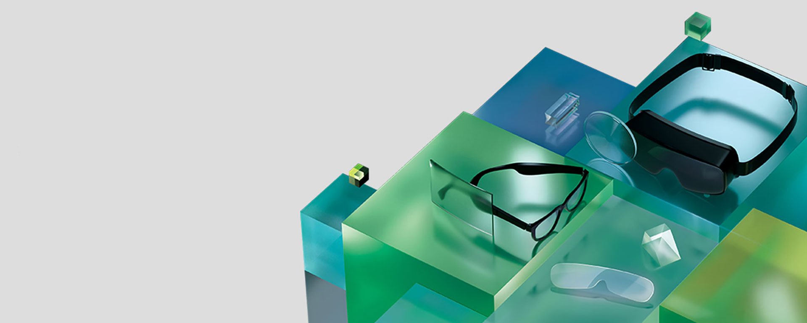
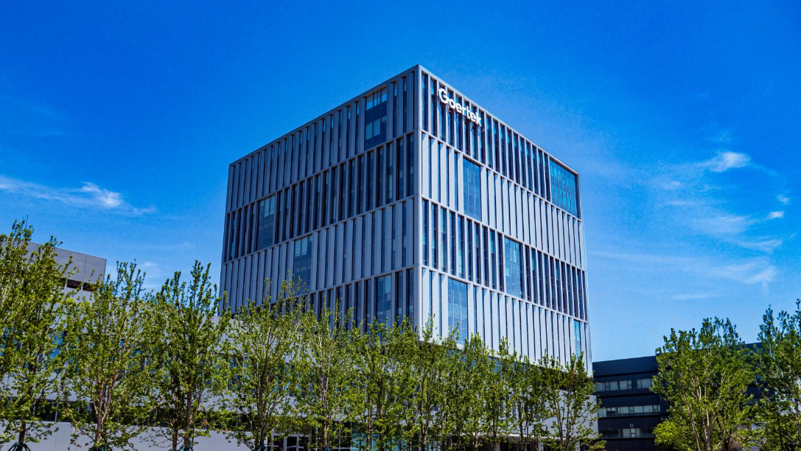
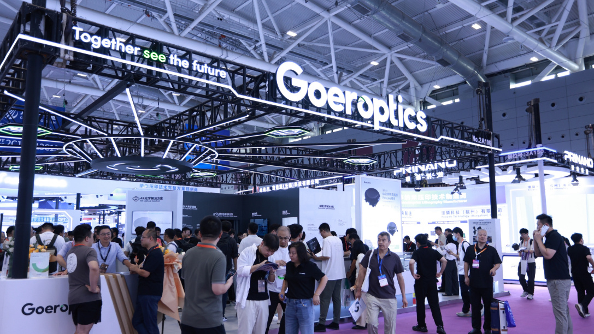

Micro OLED 济南
锚定高分辨率 VR / MR引入韩国鲜益系统（Sunic System）的蒸镀设备搭量产体系，CMOS 背板拟从晶合集成采购——把国内半导体制造基础与韩国蒸镀工艺组合在一起，在成本与供应链安全上同时留了后手。
- 2026 年 1 月签约，蒸镀设备合同约 1.97 亿元人民币（约 410 亿韩元）
- 2025 年已自研出 4K Micro OLED 显示模组
- 路线相对成熟，承接当下 XR 终端的出货需求
Goertek Display · 微显示／济南 · 上海张江
歌尔把微显示当成下一块必须自己握住的地盘。2025 年 9 月，济南歌尔视显科技有限公司注册成立，注册资本 42.3 亿元；同一年，Micro OLED 与 Micro LED 两条 12 英寸产线同时铺开——把过去用来做整机的工艺管控能力，往最上游的发光层推。

歌尔 2001 年成立、2008 年在深交所上市，长期以来给人「声学代工、VR 整机组装」的印象。它真正的底牌是另一件事：用千万级整机出货量，反向定义零部件该怎么做。
2023 年，歌尔把 Pancake 光学模组的良率做到 85%，比行业平均线高出十来个点——靠的不是单点技术突破，是整机制造攒下来的工艺管控。这套能力现在正被平移到微显示：当终端的设计需求可以直接传导到蒸镀工艺参数，中间那套「需求对接—排期调整—样品验证」的长链条就被跳过了。
歌尔视显就是这条平移路径的落点。

这两条线不是备胎关系。歌尔从一开始就给它们划了边界：Micro OLED 接当下的 VR/MR 出货，Micro LED 赌 AR 眼镜的中长期需求。在行业技术路线还没收敛的时候，双线并行是规避单点押注失败成本的办法。
引入韩国鲜益系统（Sunic System）的蒸镀设备搭量产体系，CMOS 背板拟从晶合集成采购——把国内半导体制造基础与韩国蒸镀工艺组合在一起，在成本与供应链安全上同时留了后手。
正在评估的 12 英寸新产线，设计月产能 6,000 片，与济南项目同量级。投资决策与开工预计在 2026 年底前后，目前尚未最终确认。
歌尔在 2026 年 9 月的投资者交流中，把「关键器件垂直整合」列为提升盈利能力的主要手段之一。如果显示、光学模组、整机三段打通，它卖给 XR 品牌的东西会从零件变成整段方案——议价权的位置也就变了。
2026 年 9 月 9 日的光博会上，歌尔光学把 XR、车载、投影几条线的新品一起放了出来。这些参数决定了微显示做出来之后，能被装进多薄的一副眼镜里。

据洛图科技（RUNTO）不完全统计，2026 年上半年全球智能眼镜产业链融资并购 64 起，披露总额约 90 亿元，其中约 70% 落在光波导、微显示这些上游环节。
资本押的不是整机组装，是「谁能把屏和光学做出来」。这个判断和歌尔的动作是对得上的——它同时在做显示、光学模组、整机三段，往上游走的同时也没丢掉下游的出货口。
对做技术的人来说，这件事的意义更直接：一条产线从 0 建起来，工艺窗口、良率曲线、设备调机，全都是空白页。在已经跑顺的量产线上做优化，和在还没定型的产线上定标准，是两种完全不同的职业经历。
这也是这个团队现在最缺人的原因——不是缺执行，是缺能把标准定下来的人。
具体岗位、职级与薪酬带宽，我们单独聊。部分方向属保密寻访，不在本页展开。